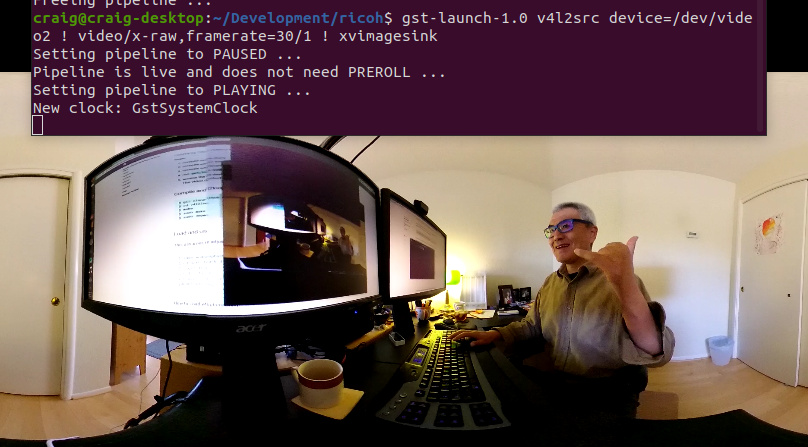
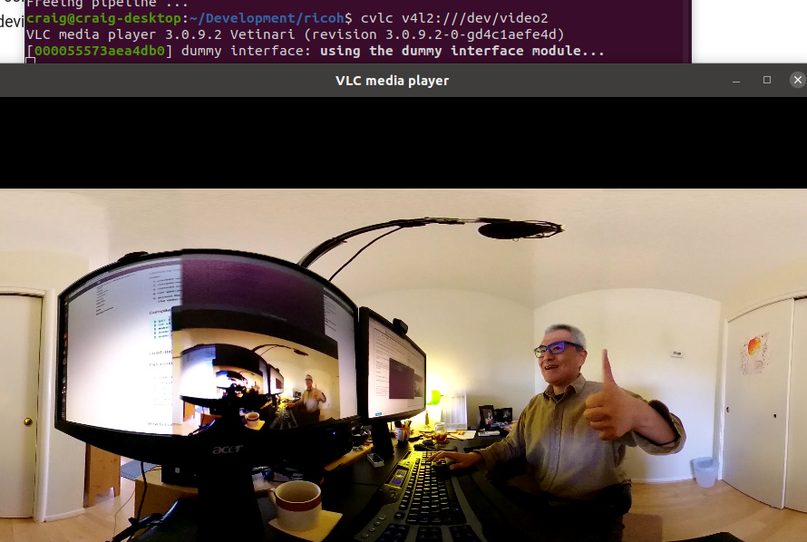
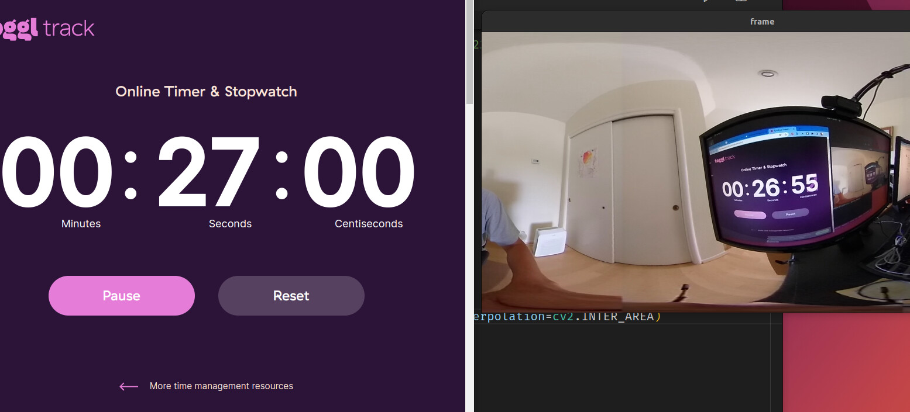

Software Requirements
Basic Software for Live Streaming
You need to download the two GitHub repos below and compile the driver and sample code.
If you want to use /dev/video0, you will also need
In addition, there are numerous dependencies to compile the tools listed above. However, have no fear, we will walk you through it.
Using gstreamer and OpenCV without v4l2loopback
v4l2loopback add complexity and latency. If your objective is to use OpenCV, consider using gstthetauvc instead.
How To Compile and Install Software
- Build and install on x86 Ubuntu 20.04
- Jetson Nano with OpenCV and VLC on /dev/video0
- Compile libuvc-theta on Jetson Nano - silent screencast
- Build and run v4l2loopback on Jetson Nano. Needed for
/dev/video0
Getting Stream on /dev/video0
Steps:
- compile and install libuvc-theta
- compile and install libuvc-theta-sample
- compile and install v4l2loopack
- run
gst_loopbackfromlibuvc-theta-sample - access the correct video device with OpenCV or any video 4 Linux 2 application such as VLC. The video device is specified in the source code.
Compile and Install v4l2loopback
git clone https://github.com/umlaeute/v4l2loopback.git
cd v4l2loopback
make
sudo make install
sudo depmod -a
Load and use
This assumes that you have adjusted the video device in
gst_viewer.c.
$ sudo modprobe v4l2loopback
$ cd path_to_gst_loopback_directory
$ ./gst_loopback
$ cvlc v4l2:///dev/video2
VLC media player 3.0.9.2 Vetinari (revision 3.0.9.2-0-gd4c1aefe4d)
[0000556fc2bd6db0] dummy interface: using the dummy interface module...
How to Load v4l2loopback automatically
In the file /etc/modules-load.d/modules.conf add a new line v4l2loopback.
$ pwd
/etc/modules-load.d
craig@jetson:/etc/modules-load.d$ cat modules.conf
# /etc/modules: kernel modules to load at boot time.
#
# This file contains the names of kernel modules that should be loaded
# at boot time, one per line. Lines beginning with "#" are ignored.
# bluedroid_pm, supporting module for bluetooth
bluedroid_pm
# modules for camera HAL
nvhost_vi
# nvgpu module
nvgpu
# for RICOH THETA live streaming
# v4l2loopback device on /dev/video0. specify in gst_viewer.c
v4l2loopback
craig@jetson:/etc/modules-load.d$
Check kernel module load
$ lsmod
Module Size Used by
bnep 16562 2
zram 26166 4
overlay 48691 0
spidev 13282 0
v4l2loopback 37383 0
nvgpu 1579891 18
bluedroid_pm 13912 0
ip_tables 19441 0
x_tables 28951 1 ip_tables
craig@jetson:/etc/modules-load.d$
v4l2loopback tests and examples
gst-launch-1.0 pipeline
$ gst-launch-1.0 v4l2src device=/dev/video2 ! video/x-raw,framerate=30/1 ! xvimagesink
Setting pipeline to PAUSED ...
Pipeline is live and does not need PREROLL ...
Setting pipeline to PLAYING ...
New clock: GstSystemClock

VLC command line example
$ cvlc v4l2:///dev/video2
VLC media player 3.0.9.2 Vetinari (revision 3.0.9.2-0-gd4c1aefe4d)
[000055573aea4db0] dummy interface: using the dummy interface module...

Use v4l2-ctl to get video device output
I’ve modified the source to stream 2K video.
$ v4l2-ctl --list-formats-ext --device /dev/video2
ioctl: VIDIOC_ENUM_FMT
Type: Video Capture
[0]: 'YU12' (Planar YUV 4:2:0)
Size: Discrete 1920x960
Interval: Discrete 0.033s (30.000 fps)
Using gstthetauvc to eliminate v4l2loopback
gstthetauvc is an alternative to using libuvc-theta-sample with v4l2loopack.
In these example, there is no /dev/video*. To get the stream into OpenCV,
set VideoCapture to the pipeline as shown in the examples below.
The plug-in is installed in /usr/lib/x86_64-linux-gnu/gstreamer-1.0.

Latency is about 360ms latency and the stream is stable.

Display thetauvcsrc to monitor with gst-launch-1.0
This example is using hardware acceleration on x86 with NVIDIA card with Linux NVIDIA driver 510.
gst-launch-1.0 thetauvcsrc mode=4K \
! queue \
! h264parse \
! nvdec \
! queue \
! glimagesink sync=false

Using gstthetauvc with OpenCV
import cv2
# pipeline below worked
# cap = cv2.VideoCapture("thetauvcsrc \
# ! decodebin \
# ! autovideoconvert \
# ! video/x-raw,format=BGRx \
# ! queue ! videoconvert \
# ! video/x-raw,format=BGR ! queue ! appsink")
# pipeline suggestion thanks to nickel110
# attempt to force hardware acceleration
# tested with NVIDIA 510.73 with old GTX 950 on Ubuntu 22.04
cap = cv2.VideoCapture("thetauvcsrc \
! queue \
! h264parse \
! nvdec \
! gldownload \
! queue \
! videoconvert n-threads=0 \
! video/x-raw,format=BGR \
! queue \
! appsink")
if not cap.isOpened():
raise IOError('Cannot open RICOH THETA')
while True:
ret, frame = cap.read()
frame = cv2.resize(frame, None, fx=0.25, fy=0.25, interpolation=cv2.INTER_AREA)
cv2.imshow('frame', frame)
c = cv2.waitKey(1)
if c == 27:
break
cap.release()
cv2.destroyAllWindows()

USB API
- libptp - next section for detailed walkthrough